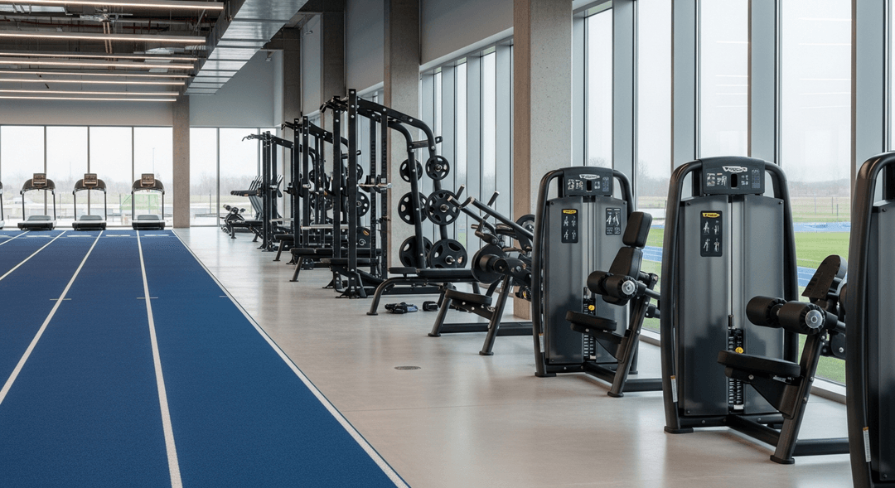
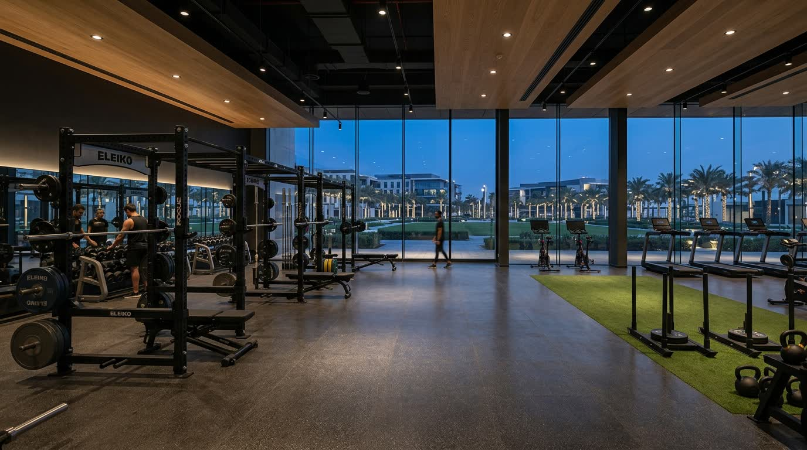

Conviction
We bring proprietary local expertise to a market defined by record FDI inflows and a surging population. This allows us to identify durable themes and invest with conviction in assets positioned for institutional growth.
We develop, own and manage commercial destinations across Dubai’s fastest-growing districts.
Scroll to explore
Dubai Creative Park
Evenly balanced between built environment and green landscape.
Sports, fitness, wellness and curated F&B in a single integrated venue.
Built and managed end to end by Gulf Alternatives.
Who we are
Since 2021, we’ve assembled a concentrated portfolio anchored by long-term leases, dollarized income and blue-chip tenants — in a market with 800+ family offices in DIFC and $500M+ in daily real estate transactions.






At a glance
Public portfolio figures, paired with the market context that makes Dubai investable.
Net leasable area, sq ft
1.06MDubai Creative Park, sq ft
500KDIFC family entities, 2025
1,289DIFC revenue, 2025
AED 2.13BOur portfolio
A curated selection of commercial destinations across Dubai’s fastest-growing districts, each built and managed by Gulfalts end to end.
Go to all projectsWhat we do
01 04
Our strategies
From wellness and fitness to fintech and automotive, each asset is built as a connected destination — where movement, work and community shape everyday life.
Stabilized, income-generating assets anchored by long leases and corporate tenants. Grade A offices and logistics facilities deliver predictable cash flows across Dubai’s structural growth.
Selective strategies targeting market dislocations and development opportunities in emerging corridors where Dubai’s demand growth outpaces global benchmarks.
ESG-compliant, smart-infrastructure-ready assets aligned with AI, fintech and next generation tenants, securing long-term relevance in Dubai’s evolving economy.
Location — what’s around
Gulfalts is anchored in Dubai — a market defined by record FDI inflows and a surging population, giving our portfolio a clear geographic point of reference.
A business park developed and managed by Gulf Alternatives, positioned for financial and technology tenants in Dubai.
View locationDubai’s first 500,000 sq ft wellness and fitness destination, evenly balanced between built environment and green landscape.
View locationA specialized commercial facility in the Gulfalts portfolio, built around Dubai’s automotive sector.
View locationA specialized commercial facility developed and managed end to end by Gulf Alternatives.
View locationGet in touch
We partner with institutions, family offices and development partners building category-defining destinations in Dubai.
Contact us